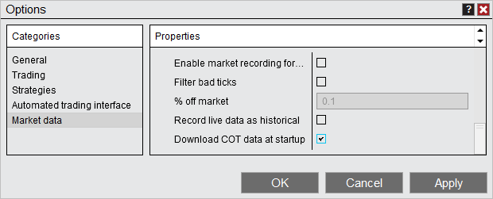
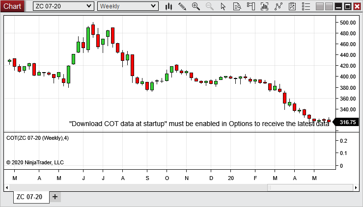
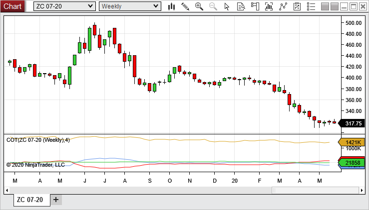
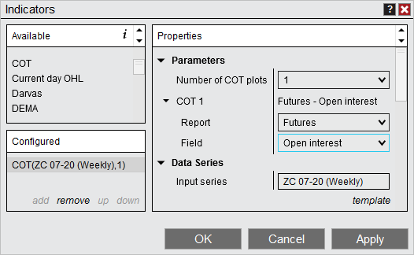
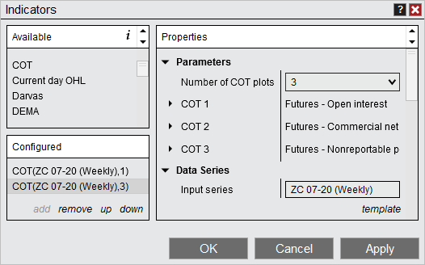
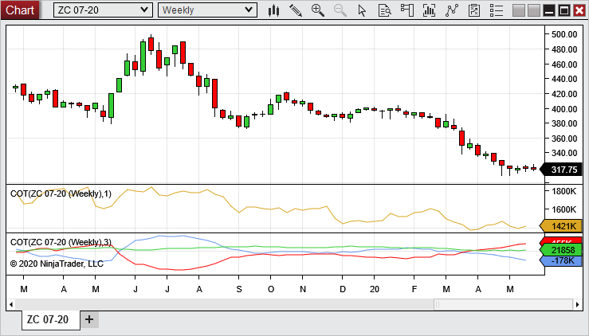
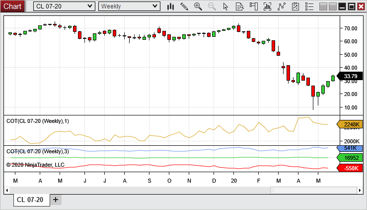
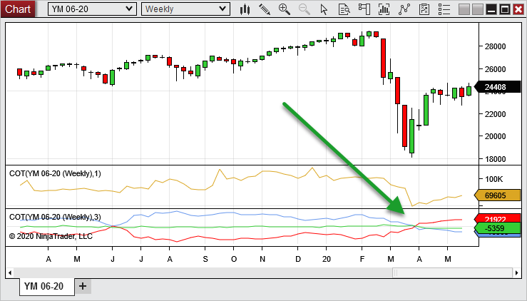

Description
The COT indicator plots weekly data from the Commitment Of Traders report, indicating holdings of different participants in the U.S. futures market.
The report is released every Friday at 3:30pm and contains position data supplied by reporting firms from that Tuesday.
 COT Overview
COT Overview
Getting Data
In order to plot the COT indicator you must first enable COT data to be download.
To do this, within the Control Center go to Tools> Options> Market Data then check and restart NinjaTrader.

If this option is not enabled and you attempt to apply the COT indicator to a chart, a message will display on the chart saying .

Display
The COT indicator is able to display 1-5 plots at a time from a single instance of the indicator for many U.S. futures instruments. By default it loads 4 plots with some of the most frequently used report fields.

The Open Interest plot typically has a value much larger than the others and it may be preferable to plot Open Interest on it's own.
To do this, within the indicator properties change the to 1 and change to the . Adjust plot colors and values as desired.

Next add another COT indicator and set to .

Now you will have a chart with Open Interest on its own panel and the net position report fields on their own panel to increase visibility.

Using the COT
COT data is often times used to compare what market participants are long vs short. This information can then be used to help determine a position per your own trading method.
Here we can see that the red plot is 558k short, indicated by the negative value, where as the blue plot is 541k long.

Another common use is to see when a market participant reverses their position or when market participants plots cross, potentially indicating a change in market direction. Here we can see as the red commercials moved to long and crossed the blue non-commercials the price started to move in a bullish direction.

Note: Since the COT reports are weekly data, the most current data will continue to plot forward until new data is available. After the new report is released on Friday at 3:30pm Eastern time, NinjaTrader will need to be restarted to download the updated data. Since the data is from that weeks Tuesday, the plots will then be updated from that Tuesday forward.
|
|
COT Parameters
Number of COT plots
|
Indicates how many plots you would like the indicator to have from 1-5
|
COT #
|
Report
|
Indicates which report to get data from
|
Field
|
Indicates what field from the report you want to plot
|
|
Note: Since this indicator is a historical weekly report and does not change based on new prices or volume, there is no benefit to having this indicator or .
|
|
COT Values NinjaScript access
For information on how to access the COT values in NinjaScript, please see the Commitment Of Traders (COT) page in the NinjaScript section of the Help Guide.
|